← Film
07 / 07
Stone & Water
The Jiangnan water towns and gardens at their own slow pace: canals, arched lanes, lotus ponds, and the small still things you only see when you stop.
-
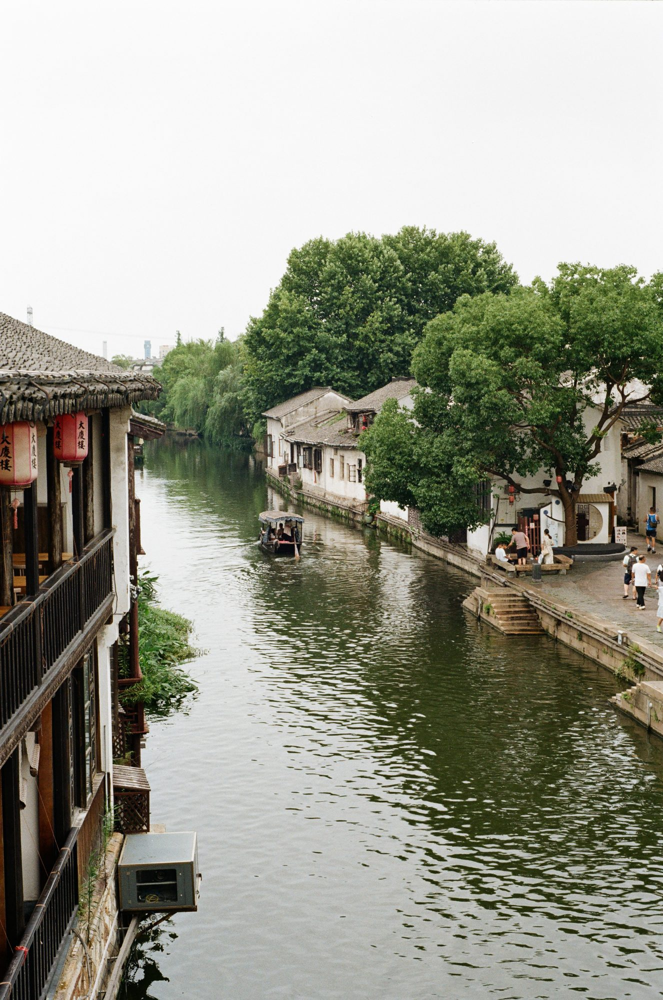
01 / 13 -
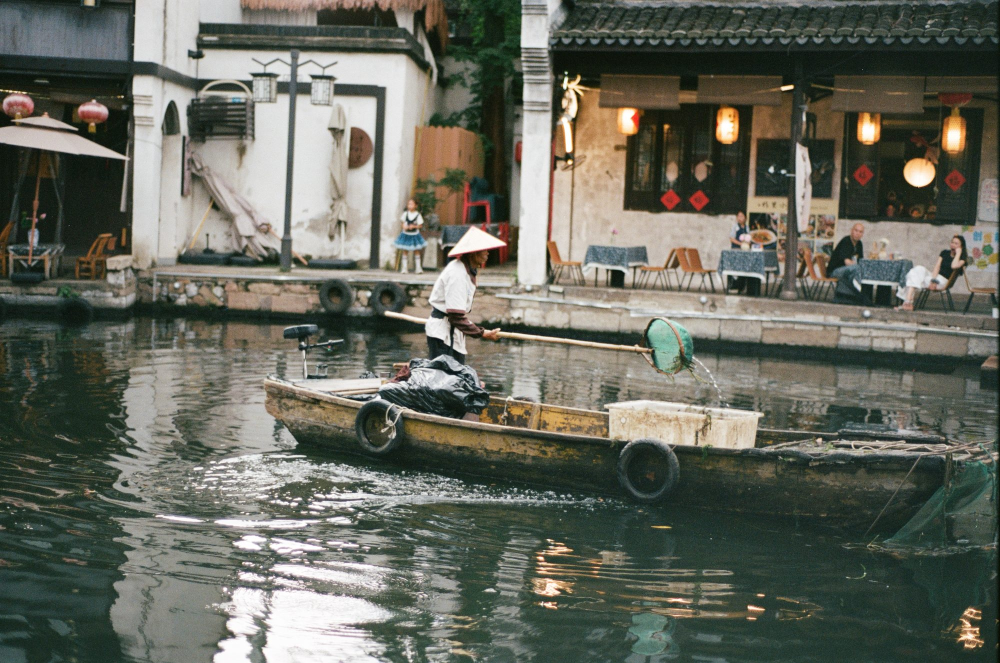
02 / 13 -
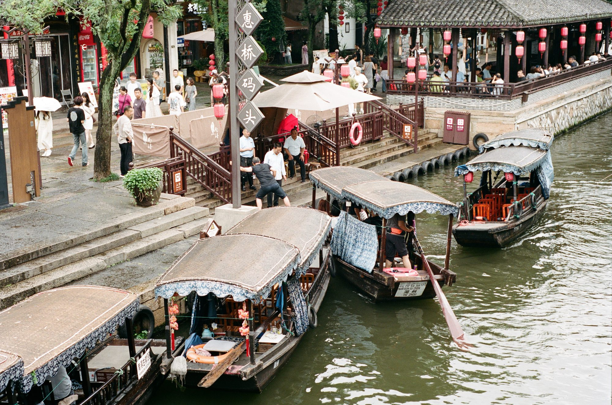
03 / 13 -
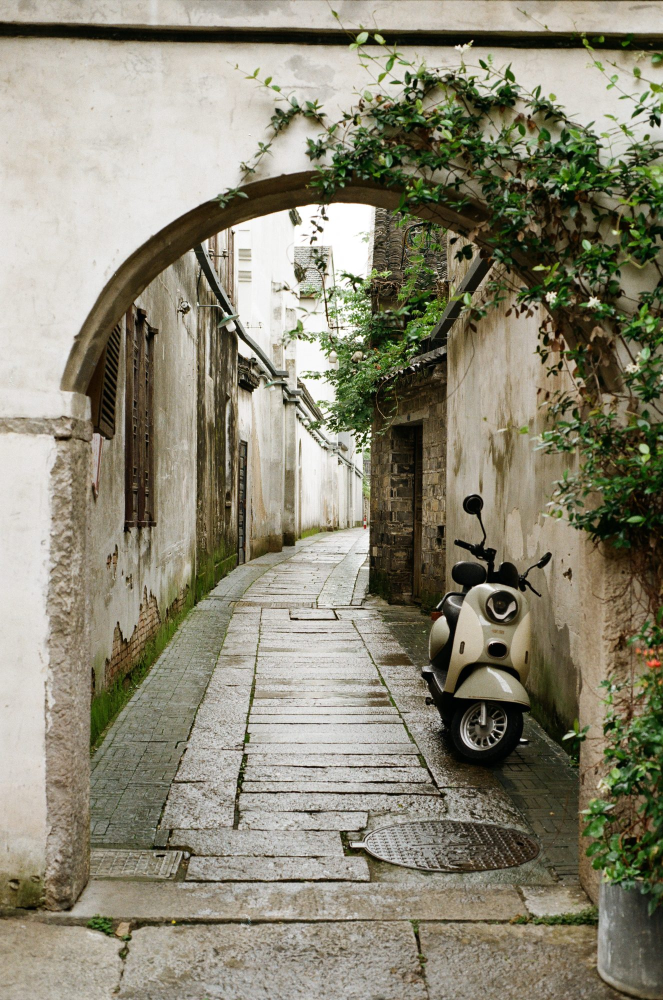
04 / 13 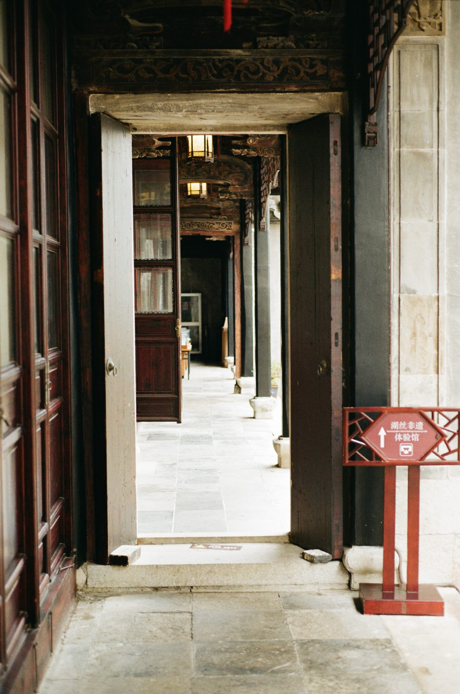
05 / 13 -
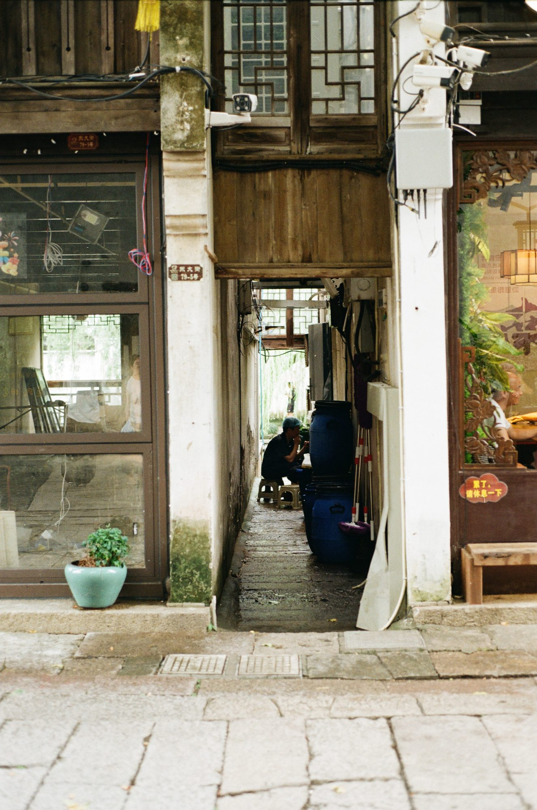
06 / 13 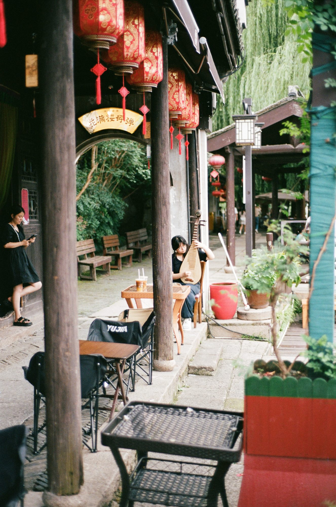
07 / 13 -
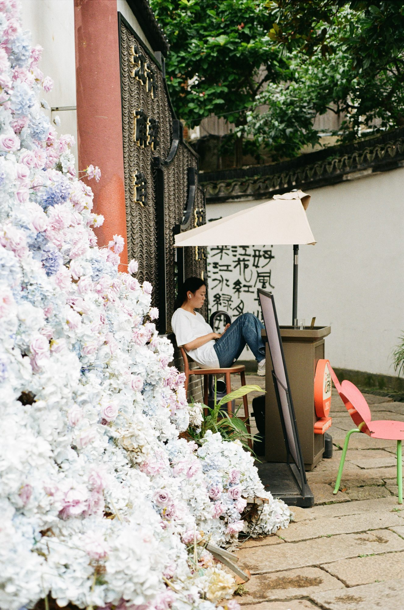
08 / 13 -
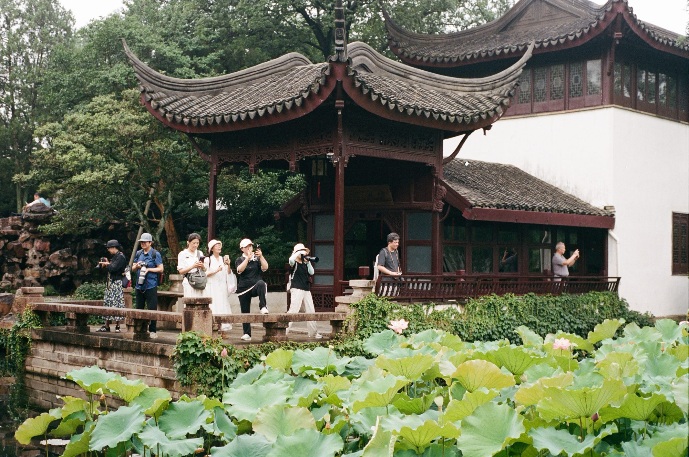
09 / 13 -
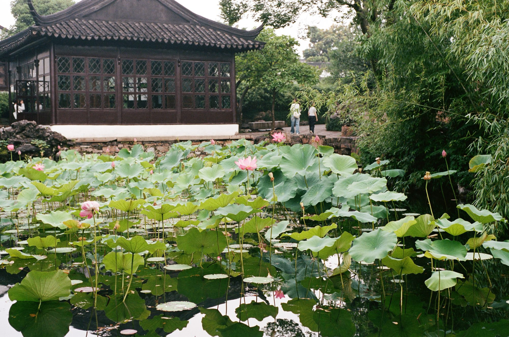
10 / 13 -
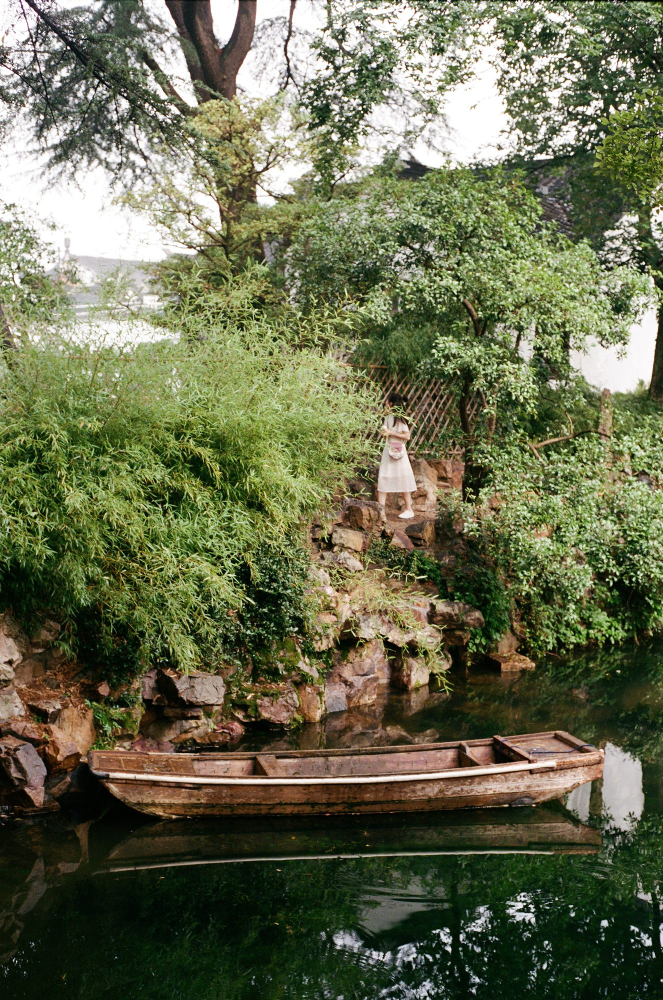
11 / 13 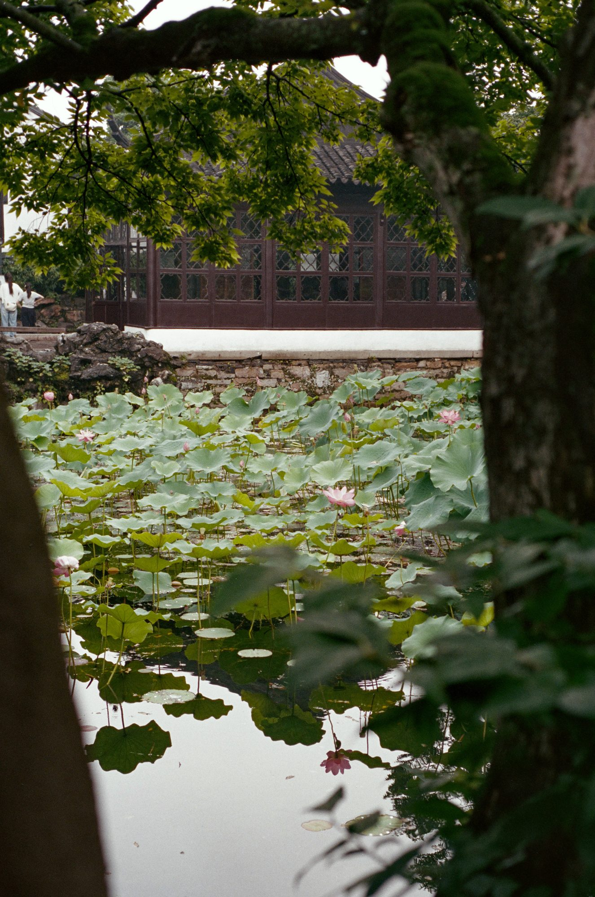
12 / 13 -
13 / 13